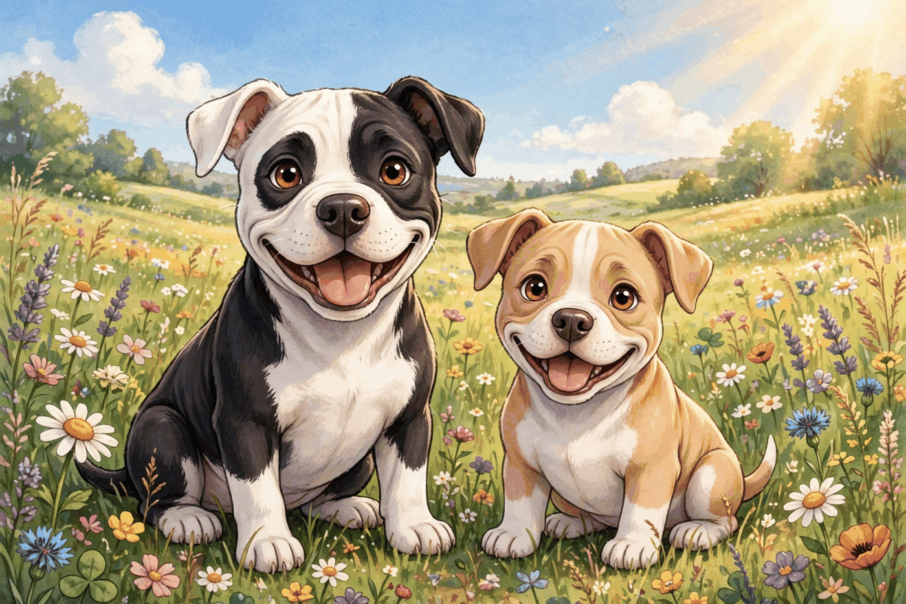

100.1 · 第一冊
《Muffin 扭啊扭》
系列的開篇故事。有 Kindle 電子版和平裝版。

計劃中的 26 本繪本，幫助孩子理解和麪對慢性病。靈感來自 Muffin，一隻真實的比特犬，她有癲癇，也教會了全家人什麼是勇氣。
適合親子共讀的故事，不是醫療建議。每個孩子的照護，都應由最瞭解他的人來決定。
系列的開篇故事。有 Kindle 電子版和平裝版。
系列的下一個故事。
Muffin 的小角落只是玩的地方。它不是書店，也不是目錄。系列圖書和捐贈承諾都在本頁。
捐贈承諾在本頁下方有詳細說明。小角落裡永遠不會出現金額。
小角落不會要求孩子提供姓名、郵箱、照片或位置。聲音都是提前錄好的朗讀音頻，只有孩子點一下才會播放。
Muffin 比特犬系列淨版稅的 5%每季度捐給聖裘德兒童研究醫院。
這是小屋以 Muffin 的名義做出的長期承諾，不是一次性的活動。買這個系列的書，就是在支持這份每季度的捐贈。除買書之外的支持，完全自願。故事一直都在。
December 20, 2026
計量表上的金額來自小屋自己的 KDP 銷售報告，定期更新。這裡沒有任何估算或虛構，禮物金額精確到分。
想幫 Muffin 的書走得更遠？在 Ko-fi 上支持 Muffin 的書。Ko-fi 的支持幫我們做出下一本書。聖裘德的禮物本身來自書賣出後的版稅。